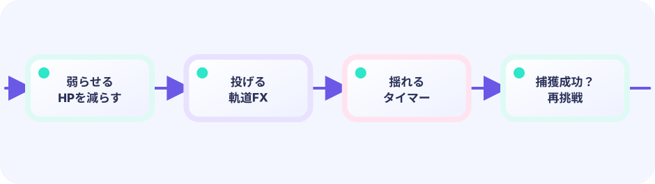

DATA
投げる、飛ぶ、3回揺れる、成功して弾ける、という中間フレームで捕獲を待ちたくなる時間にします。
★★★★☆ / PLAYABLE
投げる、飛ぶ、3回揺れる、成功して弾ける、という中間フレームで捕獲を待ちたくなる時間にします。
PLAY FIRST
投げる、飛ぶ、3回揺れる、成功して弾ける、という中間フレームで捕獲を待ちたくなる時間にします。

DEEP DIVE
成功判定は投げた瞬間に一度だけ行い、結果をphaseに保存します。その後は同じ答えを、軌道、揺れ、粒子の順で見せます。tickごとに抽選し直さないことが大切です。
投げる、飛ぶ、3回揺れる、成功して弾ける、という中間フレームで捕獲を待ちたくなる時間にします。
成功判定は投げた瞬間に一度だけ行い、結果をphaseに保存します。その後は同じ答えを、軌道、揺れ、粒子の順で見せます。tickごとに抽選し直さないことが大切です。
訪問順や捕獲連続記録を変えて、もう一度挑戦できます。
SYSTEM LAB
成功判定は投げた瞬間に一度だけ行い、結果をphaseに保存します。その後は同じ答えを、軌道、揺れ、粒子の順で見せます。tickごとに抽選し直さないことが大切です。
READY
UPDATE と DRAW の境界
キー・タッチを読み、位置・HP・ゲージ・タイマー・盤面を変えます。判定やキュー操作もこちらです。
入力 → ルール → game を更新できあがった game の値を読んで、絵・文字・エフェクトを置きます。game の値は変えません。
game を読む → ピクセルへ投影このページのルールは Update 側（または Update が呼ぶ純粋な関数）へ置き、Draw はその結果を表示するだけにします。
GO + EBITENGINE
投げる、飛ぶ、3回揺れる、成功して弾ける、という中間フレームで捕獲を待ちたくなる時間にします。
success := rng.Intn(100) < chance
phase = throw
// Update advances flight → rock → burst
if phase == contact { show(success) }成功判定は投げた瞬間に一度だけ行い、結果をphaseに保存します。その後は同じ答えを、軌道、揺れ、粒子の順で見せます。tickごとに抽選し直さないことが大切です。
出現表や演出時間を変えて比べよう。
天気で出会いが変わる地域を足そう。
FEEDBACK